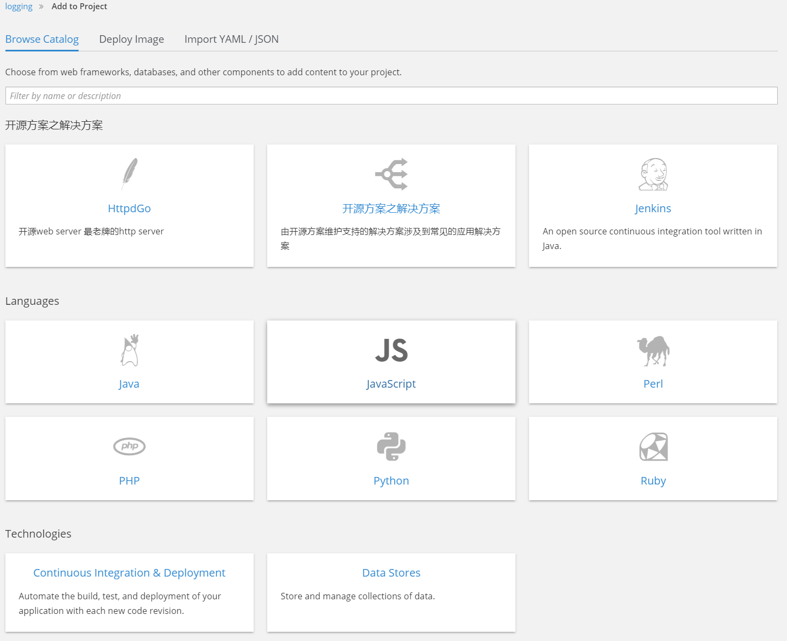

| 版本 | 日期 | 状态 | 修订人 | 摘要 |
|---|---|---|---|---|
| V1.0 | 2018-04-27 | 创建 | 开源方案 | 初始版本 |
类目分类是用来组织模板和builder image的分组方式,我们可以按照自己需要的方式，对应用模板进行归类. 主要匹配的是 模板或者ImageStream的 tag 标签项
// Add Go to the Languages category
var category = _.find(window.OPENSHIFT_CONSTANTS.CATALOG_CATEGORIES,
{ id: 'languages' });
category.items.splice(2,0,{ // Insert at the third spot
// Required. Must be unique
id: "go",
// Required
label: "Go",
// Optional. If specified, defines a unique icon for this item
iconClass: "font-icon icon-go-gopher",
// Optional. If specified, enables matching other tag values to this category
// item
categoryAliases: [
"golang"
]
});
// Add a Featured category section at the top of the catalog
window.OPENSHIFT_CONSTANTS.CATALOG_CATEGORIES.unshift({
// Required. Must be unique
id: "opssolution",
// Required
label: "开源方案之解决方案",
// Optional. If specified, each item in the category will utilize this icon
// as a default
iconClassDefault: "fa fa-code",
items: [
{
// Required. Must be unique
id: "go",
// Required
label: "Go",
// Optional. If specified, defines a unique icon for this item
iconClass: "font-icon icon-go-gopher",
// Optional. If specified, enables matching other tag values to this
// category item
categoryAliases: [
"golang"
],
// Optional. If specified, will display below the item label
description: "An open source programming language developed at Google in " +
"2007 by Robert Griesemer, Rob Pike, and Ken Thompson."
},
{
// Required. Must be unique
id: "httpd",
// Required
label: "HttpdServer",
// Optional. If specified, defines a unique icon for this item
iconClass: "font-icon icon-apache",
// Optional. If specified, enables matching other tag values to this
// category item
categoryAliases: [
"httpd"
],
// Optional. If specified, will display below the item label
description: "开源web server" +
"最老牌的http server"
},
{
// Required. Must be unique 开源方案的ID
id: "51know",
// Required
label: "开源方案之解决方案",
// Optional. If specified, defines a unique icon for this item
iconClass: "font-icon icon-load-balancer",
// Optional. If specified, enables matching other tag values to this
// category item
categoryAliases: [
"httpd"
],
// Optional. If specified, will display below the item label
description: "由开源方案维护支持的解决方案" +
"涉及到常见的应用解决方案"
},
{
// Required. Must be unique
id: "jenkins",
// Required
label: "Jenkins",
// Optional. If specified, defines a unique icon for this item
iconClass: "font-icon icon-jenkins",
// Optional. If specified, will display below the item label
description: "An open source continuous integration tool written in Java."
}
]
});
assetConfig:
...
extensionScripts:
- /path/to/my-catalog-categories.js
# systemctl restart origin-master

参考资料
https://docs.openshift.org/3.6/dev_guide/templates.html#writing-description